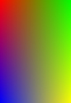

Method Image.Image()->tuned_box()
- Method tuned_box
objectintx1,inty1,intx2,inty2,array(array(int))corner_color)- Description
-
Draws a filled rectangle with colors (and alpha values) tuned between the corners.
Tuning function is (1.0-x/xw)*(1.0-y/yw) where x and y is the distance to the corner and xw and yw are the sides of the rectangle.


 original tuned box solid tuning
(blue,red,green,yellow)tuning transparency
(as left + 255,128,128,0) - Parameter
x1 - Parameter
y1 - Parameter
x2 - Parameter
y2 -
rectangle corners
- Parameter
corner_color -
colors of the corners:
({x1y1,x2y1,x1y2,x2y2})each of these is an array of integeres:({r,g,b}) or ({r,g,b,alpha})Default alpha channel value is 0 (opaque). - Returns
-
the object called